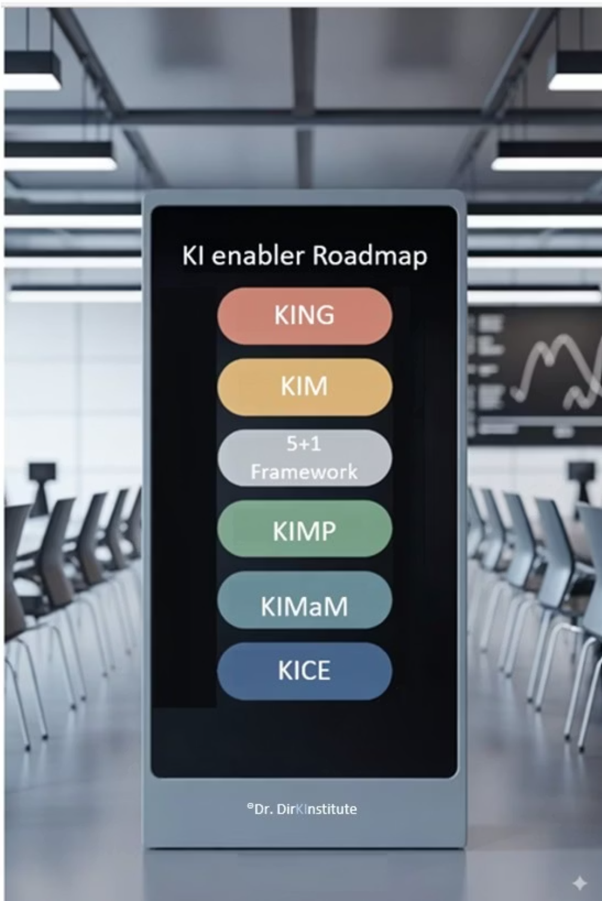
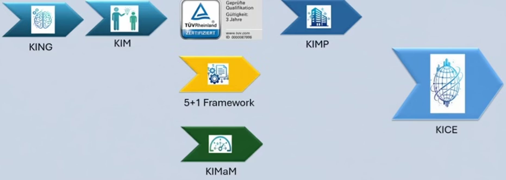

Audience
Leadership, mid-market, regulated industries
KIER targets owners, executives and responsible roles who want to integrate AI systematically, safely and independently into their organization.
AI Enabler Roadmap (KIER)
The English version is currently being finalized. For the full detail, you can switch to German at any time.
Value
KIER targets owners, executives and responsible roles who want to integrate AI systematically, safely and independently into their organization.
Without clear roles, steering and structure, AI turns into a black box: with risks for compliance, economics and trust.
KIER creates audit-ready AI leadership: structured, grounded in regulation and scalable in operations.
What makes KIER different
EU AI Act, ISO 42001, GPAI, ISO 31000 and GDPR are considered and anchored in an audit-ready way.
The roadmap is designed to build internal capability while working with real use cases, not just policies on paper.
Sessions and roundtables with Dr. Dirk support exchange, reflection and real-time implementation.
First measurable improvements typically emerge already after the first module by working on real use cases.
Optional TUV certificate for AI management competence under EU AI Act Article 4 as a formal proof for staff and organization.
The KIeR book and structure ensure knowledge does not evaporate, but stays inside the organization.
Personal entry
Dr. Dirk Kötting connects business, science, teaching and operational delivery. This is the foundation of the AI Enabler Roadmap.
He supports organizations around business processes, ITSM, information security, NIS-2 and AI governance, bridging scientific grounding with practical delivery.

Proof

With a focus on office AI, the workshop achieved strategic clarity and defined initial daily-use cases.
A validated method, governance over randomness, internal capability over outsourcing, and regulatory safety as the core.
If you provide the original file or a direct video link, we will embed it here natively.
Learning path
Awareness / Governance / Operations / Evidence
From first orientation to an embedded operating model.
Common language, baseline understanding and clear expectations.
Roles, responsibilities and a decision framework for AI use cases.
Skills, processes and training that work in day-to-day reality.
Proof, documentation and controls that hold under scrutiny.


Start
The first step is a short scoping session. Then we define an actionable roadmap and embed it in operations.